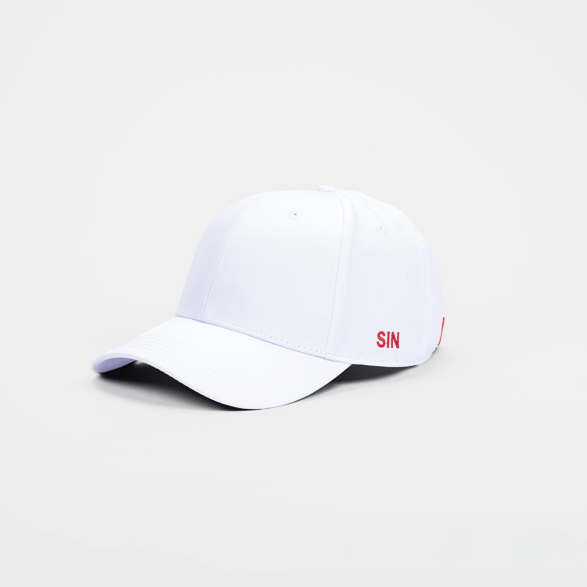
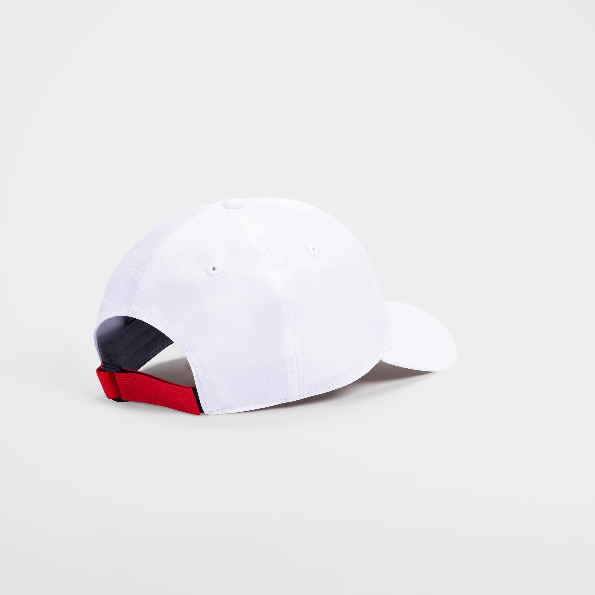
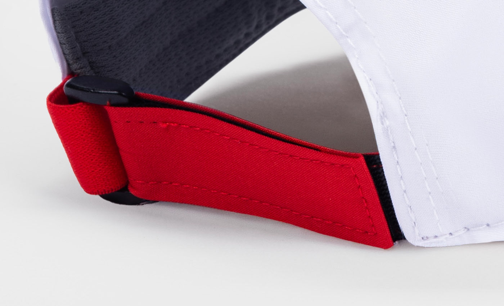
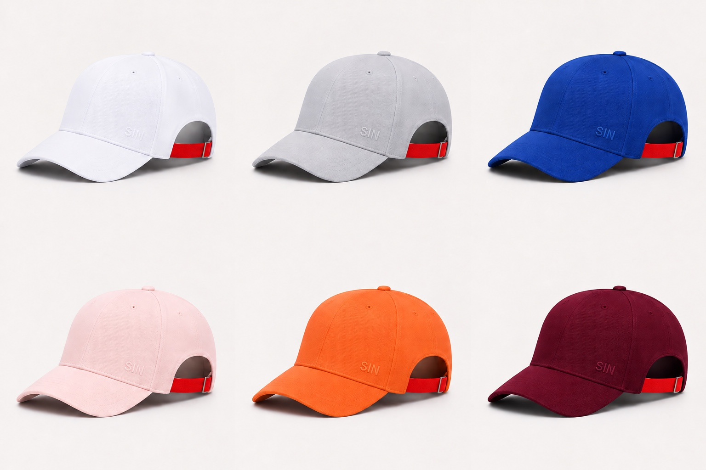

01 · La silhouette
Une casquette.
Une signature.
Le logo SIN ouvre le mouvement. Fais défiler pour voir la languette rouge prendre sa place.




Le logo SIN ouvre le mouvement. Fais défiler pour voir la languette rouge prendre sa place.
Trois lettres se resserrent. La signature se détache et descend vers la casquette.
La casquette pivote. La languette rouge rejoint son emplacement et révèle le détail qui relie tous les coloris.
Blanc, gris, bleu, rose, orange ou bordeaux. La languette reste la même.
Découvre la collection SIN Red Paris.
Une même signature, quelle que soit ta couleur.
Découvrir les casquettes